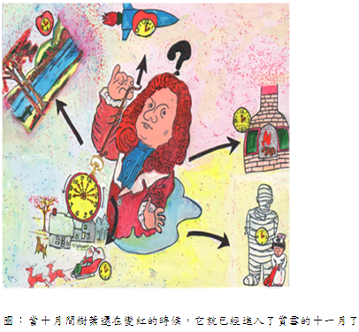

馬克土溫著 江銘輝譯

我那隻漂亮的新懷錶，己經走了18個月，不慢也不快，機件沒有出過毛病，也不曾停過。我已經確信用這隻錶來判斷一天的所有時間是絕對正確，也認為它的構造和零件永遠不會壞。但是有一天晚上，我終於把它弄壞了。我對這件事感到悲傷，因為它彷彿告知大災難來臨的徵兆。但不久，我鼓起勇氣，把大災難來臨的惡兆控制和趕走了迷信，決定按照自己的意思調整懷錶時間。
第二天我走進一家第一流的珠寶鐘錶店，想對準正確時間。這時，店老闆從我手裡把錶拿去，替我對準時間。隨後他說:「這隻錶慢了四分，得把它撥快些。」我想阻止他，讓他知道錶的時間非常準確，但是沒有用。那個笨傢伙只知道錶慢四分，非把撥快一些不可，所以不管我焦急地在他的周圍轉來轉去，要求他不要動這隻錶，但他冷酷地作了這該死的事。
我的錶開始走快了，一天快過一天，不到一星期，它生了猛烈的熱病，甚至在蔭涼的地方，它的脈搏也升到一百五十。兩個月過後，街上的所有錶都遠遠落在它的後面，比日曆快了十三天以上。當十月間樹葉還在變紅的時候，它就已經進入了賞雪的十一月了。其他催我急速付房租和帳單等等……此類導致破產的方式，使我無法忍受。
於是我把錶送給另一個修錶師傅修理。他問我以前有沒有修理過。我說沒有，它過去不曾作過任何修理。他浮起不懷好意的幸福表情，急迫地將我的錶援開，再把眼睛湊在小小的筒管鏡上檢視著機件。然後他說，只是修理還不行，還得清洗和加油，一星期後來拿。
經過清洗、加油和修理過之後，我的錶走慢了，像教堂的敲鐘一般，慢吞吞地走著。於是，我搭不上火車，趕不上所有的約會，連晚餐也來不及去吃。為了錶，我的錶將3天的期限寬延到4天，我還為此去抗議；我慢慢退回到昨天，再退回到前天，又退回到了前一星期；不久，我發現到，這個世界消失了，只剩我一個人徘徊在上上星期中。我偷偷摸摸的感到自己與博物館中的木乃伊是同類，並且渴望與他互通消息。
我又找到一個鐘錶師傅，在我等待的時候，師傅把我錶的全部零件拆開，然後說:發條的盒于「膨脹」了。他說，三天之內就可以復原。這樣修理以後，懷錶平均起來走得很好，但僅只如此。那就是上半天胡鬧地跑個不停，不停的喘氣、咳嗽、打噴嚏、吸鼻子的聲音，吵得我不能靜下來想自己的事情。照這樣速度維持下去，恐怕全世界沒有一隻錶有機會能趕上它。但後半天，它的動作慢慢遲滯，停停歇歇的，直到所有落後的錶都趕上它。這樣到了二十四小時將結束的時候，它卻及時快步準時趕到終點站。不錯，它指出了不偏不移的平均值，有人能說它多多少少沒有盡到責任嗎？
但一隻錶僅是平均準確，也並不能算是什麼優點，於是我又把這個「計時器」送給另一個鐘錶師傅修理，他說大螺絲釘斷了。我說，我很高興聽到它沒有重大毛病。但平實說，我對大螺絲釘一點概念都沒有，但我不願讓陌生人認為自己無知。鐘錶師傅雖然把大螺絲釘修好了，但是有得，也有失。也就是走一會兒停一會兒，然後再走一會兒……等等，且要走多久或停歇多久完全隨心所欲。另外每次停下來，它就像射槍般地向後反彈一下。
我忍耐了幾天，終於又把它送給另一個鐘錶師傅修理。他挑出所有零件，在筒管鏡下翻來覆去把「殘骸」看了好幾次，然後，他說好像是小扳機出現一些問題。他已修好，讓它重新出發。這次我的錶走得很好，但走到九點五十分的時候，長短二針像剪刀一般疊在一起，以後兩根針便疊著一起走了。即使是世界上年紀最大的人也不能從如此的懷錶看出白天或晚上時間。我不得不把這個東西又送去修埋。
這個錶匠說，水晶蓋已經彎了，主發條也不正。他又說，機件的一部分也需要半形襯墊。他把這些都修好了。於是除了偶爾之外，我的錶走得已經無懈可擊。但是，在靜靜向前走了將近8小時之後，內部的機件就突然全部鬆開，發出蜜蜂般的嗡嗡聲，隨後，兩根針便急速地轉起來，快得完全分辨不出長短針，簡直像是錶盤上罩了一層精密的螂蛛網。這樣，只花了六、七分鐘，我的錶就轉完了二十四小時，然後「砰」得一聲，停止了。我心情沉重地找另一位鐘錶師傅，他將錶分解得支離破碎查看。我下定決心這次非好好地質問不可，因為這個問題已相當嚴重了。這個錶最初是二百元買的，但我已經付出了二、三千元的修理費。我邊看邊等待時，我認出這個錶匠以前就認識的，他過去是輪船上的技師，而且技術並不怎麼高明。他也同別的鐘錶師傅一樣，仔細檢查過所有的零件之後，充滿自信地下了判斷。他說:「這東西的蒸氣太多了，得用活動板鉗去固定安全瓣!」我當場敲碎了他的腦殼，自已花錢把他埋葬掉了。
我的威廉叔叔 (可惜已經過世)經常說，好馬就是好馬，一旦逃出去了以後就再也不是好馬了，好錶就是好錶，一旦經過鐘錶匠的手就完蛋了。他也時常懷疑那些半吊子的修補匠、槍砲匠、鞋匠、機械匠或鐵匠，最後不知會變成什麼樣子，但始終沒有人能回答這個問題。
MY WATCH
AN INSTRUCTIVE TALE
MY beautiful new watch had run eighteen months without losing or gaining, and without breaking any part of its machinery or stopping. I had come to believe it infallible in its judgments about the time of day, and to consider its constitution and its anatomy imperishable. But at last, one night, I let it run down. I grieved about it as if it were a recognized messenger and forerunner of calamity. But by and by I cheered up, set the watch by guess, and commanded my bodings and superstitions to depart. Next day I stepped into the chief jeweler's to set it by the exact
time, and the head of the establishment took it out of my hand and proceeded to set it for me. Then he said, "She is four minutes slow -- regulator wants pushing up." I tried to stop him -- tried to make him understand that the watch kept perfect time. But no; all this human cabbage could see was that the watch was four minutes slow, and the regulator must be pushed up a little; and so, while I danced around him in anguish, and implored him to let the watch alone, he calmly and cruelly did the shameful deed. My watch began to gain. It gained faster and faster day by day. Within the week it sickened to a raging fever, and its pulse went up to a hundred and fifty in the shade. At the end of two months it had left all the timepieces of the town far in the rear, and was a fraction over thirteen days ahead of the almanac. It was away into November enjoying the snow, while the October leaves were still turning. It hurried up house rent, bills payable, and such things, in such a ruinous way that I could not abide it. I took it to the watchmaker to be regulated. He asked me if I had ever had it repaired. I said no, it had never needed any repairing. He looked a look of vicious happiness and eagerly pried the watch open, and then put a small dice box into his eye and peered into its machinery. He said it wanted cleaning and oiling, besides regulating -- come in a week. After being cleaned and oiled, and regulated, my watch slowed down to that degree that it ticked like a tolling bell. I began to be left by trains, I failed all appointments, I got to missing my dinner; my watch strung out three days' grace to four and let me go to protest; I gradually drifted back into yesterday, then day before, then into last week, and by and by the comprehension came upon me that all solitary and alone I was lingering along in week before last, and the
world was out of sight. I seemed to detect in myself a sort of sneaking fellow-feeling for the mummy in the museum, and desire to swap news with him. I went to a watch maker again. He took the watch all to pieces while I waited, and then said the barrel was "swelled." He said he could reduce it in three days. After this the watch averaged well, but nothing more. For half a day it would go like the very mischief, and keep up such a barking and wheezing and whooping and sneezing and snorting, that I could not hear myself think for the disturbance; and as long as it held out there was not a watch in the land that stood any chance against it. But the rest of the day it would keep on slowing down and fooling along until all the clocks it had left behind caught up again. So at last, at the end of twenty-four hours, it would trot up to the judges' stand all right and just in time. It would show a fair and square average, and no man could say it had done more or less than its duty. But a correct average is only a mild virtue in a watch, and I took this instrument to another watchmaker. He said the kingbolt was broken. I said I was glad it was nothing more serious. To tell the plain truth, I had no idea what the kingbolt was, but I did not choose to appear ignorant to a stranger. He repaired the kingbolt, but what the watch gained in one way it lost in another. It would run awhile and then stop awhile, and then run awhile again, and so on, using its own discretion about the intervals. And every time it went off it kicked back like a musket. I padded my breast for a few days, but finally took the watch to another watchmaker. He picked it all to pieces, and turned the ruin over and over under his glass; and then he said there appeared to be something the matter with the hair-trigger. He
fixed it, and gave it a fresh start. It did well now, except that always at ten minutes to ten the hands would shut together like a pair of scissors, and from that time forth they would travel together. The oldest man in the world could not make head or tail of the time of day by such a watch, and so I went again to have the thing repaired. This person said that the crystal had got bent, and that the mainspring was not straight. He also remarked that part of the works needed half-soling. He made these things all right, and then my timepiece performed unexceptionably, save that now and then, after working along quietly for nearly eight hours, everything inside would let go all of a sudden and begin to buzz like a bee, and the hands would straightway begin to spin round and round so fast that their individuality was lost completely, and they simply seemed a delicate spider's web over the face of the watch. She would reel off the next twenty-four hours in six or seven minutes, and then stop with a bang. I went with a heavy heart to one more watchmaker, and looked on while he took her to pieces. Then I prepared to cross-question him rigidly, for this thing was getting serious. The watch had cost two hundred dollars originally, and I seemed to have paid out two or three thousand for repairs. While I waited and looked on I presently recognized in this watchmaker an old acquaintance -- a steamboat engineer of other days, and not a good engineer, either. He examined all the parts carefully, just as the other watchmakers had done, and then delivered his verdict with the same confidence of manner.
He said:
"She makes too much steam -- you want to hang the monkey-wrench on the safety-valve!"
I brained him on the spot, and had him buried at my own expense.
My uncle William (now deceased, alas!) used to say that a good horse was a good horse until it had run away once, and that a good watch was a good watch until the repairers got a chance at it. And he used to wonder what became of all the unsuccessful tinkers, and gunsmiths, and shoemakers, and engineers, and blacksmiths; but nobody could ever tell him.
My Watch: An Instructive Little Tale
Written in 1870 by Mark Twain (1835-1910)
This version originally published in 2005 by Infomotions, Inc. It was derived from the Internet Wiretap Edition of My Watch by Mark Twain From "Sketches New and Old", Copyright 1903, Samuel Clemens. It was placed in the Public Domain (June 1993, #16). (Written about 1870.) This document is distributed under the GNU Public License.
My beautiful new watch had run eighteen months without losing or gaining, and without breaking any part of its machinery or stopping. I had come to believe it infallible in its judgments about the time of day, and to consider its constitution and its anatomy imperishable. But at last, one night, I let it run down. I grieved about it as if it were a recognized messenger and forerunner of calamity. But by and by I cheered up, set the watch by guess, and commanded my bodings and superstitions to depart. Next day I stepped into the chief jeweler's to set it by the exact time, and the head of the establishment took it out of my hand and proceeded to set it for me. Then he said, "She is four minutes slow -- regulator wants pushing up." I tried to stop him -- tried to make him understand that the watch kept perfect time. But no; all this human cabbage could see was that the watch was four minutes slow, and the regulator MUST be pushed up a little; and so, while I danced around him in anguish, and implored him to let the watch alone, he calmly and cruelly did the shameful deed. My watch began to gain. It gained faster and faster day by day. Within the week it sickened to a raging fever, and its pulse went up to a hundred and fifty in the shade. At the end of two months it had left all the timepieces of the town far in the rear, and was a fraction over thirteen days ahead of the almanac. It was away into November enjoying the snow, while the October leaves were still turning. It hurried up house rent, bills payable, and such things, in such a ruinous way that I could not abide it. I took it to the watchmaker to be regulated. He asked me if I had ever had it repaired. I said no, it had never needed any repairing. He looked a look of vicious happiness and eagerly pried the watch open, and then put a small dice box into his eye and peered into its machinery. He said it wanted cleaning and oiling, besides regulating -come in a week. After being cleaned and oiled, and regulated, my watch slowed down to that degree that it ticked like a tolling bell. I began to be left by trains, I failed all appointments, I got to missing my dinner; my watch strung out three days' grace to four and let me go to protest; I gradually drifted back into yesterday, then day before, then into last week, and by and by the comprehension came upon me that all solitary and alone I was lingering along in week before last, and the world was out of sight. I seemed to detect in myself a sort of sneaking fellow-feeling for the mummy in the museum, and desire to swap news with him. I went to a watch maker again. He took the watch all to pieces while I waited, and then said the barrel was "swelled." He said he could reduce it in three days. After this the watch AVERAGED well, but nothing more. For half a day it would go like the very mischief, and keep up such a barking and wheezing and whooping and sneezing and snorting, that I could not hear myself think for the disturbance; and as long as it held out there was not a watch in the land that stood any chance against it. But the rest of the day it would keep on slowing down and fooling along until all the clocks it had left behind caught up again. So at last, at the end of twenty-four hours, it would trot up to the judges' stand all right and just in time. It would show a fair and square average, and no man could say it had done more or less than its duty. But a correct average is only a mild virtue in a watch, and I took this instrument to another watchmaker. He said the kingbolt was broken. I said I was glad it was nothing more serious. To tell the plain truth, I had no idea what the kingbolt was, but I did not choose to appear ignorant to a stranger. He repaired the kingbolt, but what the watch gained in one way it lost in another. It would run awhile and then stop awhile, and then run awhile again, and so on, using its own discretion about the intervals. And every time it went off it kicked back like a musket. I padded my breast for a few days, but finally took the watch to another watchmaker. He picked it all to pieces, and turned the ruin over and over under his glass; and then he said there appeared to be something the matter with the hairtrigger. He fixed it, and gave it a fresh start. It did well now, except that always at ten minutes to ten the hands would shut together like a pair of scissors, and from that time forth they would travel together. The oldest man in the world could not make head or tail of the time of day by such a watch, and so I went again to have the thing repaired. This person said that the crystal had got bent, and that the mainspring was not straight. He also remarked that part of the works needed halfsoling. He made these things all right, and then my timepiece performed unexceptionably, save that now and then, after working along quietly for nearly eight hours, everything inside would let go all of a sudden and begin to buzz like a bee, and the hands would straightway begin to spin round and round so fast that their individuality was lost completely, and they simply seemed a delicate spider's web over the face of the watch. She would reel off the next twenty-four hours in six or seven minutes, and then stop with a bang. I went with a heavy heart to one more watchmaker, and looked on while he took her to pieces. Then I prepared to cross-question him rigidly, for this thing was getting serious. The watch had cost two hundred dollars originally, and I seemed to have paid out two or three thousand for repairs. While I waited and looked on I presently recognized in this watchmaker an old acquaintance -- a steamboat engineer of other days, and not a good engineer, either. He examined all the parts carefully, just as the other watchmakers had done, and then delivered his verdict with the same confidence of manner.
He said:
"She makes too much steam -- you want to hang the monkey-wrench on the safety-valve!"
I brained him on the spot, and had him buried at my own expense.
My uncle William (now deceased, alas!) used to say that a good horse was a good horse until it had run away once, and that a good watch was a good watch until the repairers got a chance at it. And he used to wonder what became of all the unsuccessful tinkers, and gunsmiths, and shoemakers, and engineers, and blacksmiths; but nobody could ever tell him.